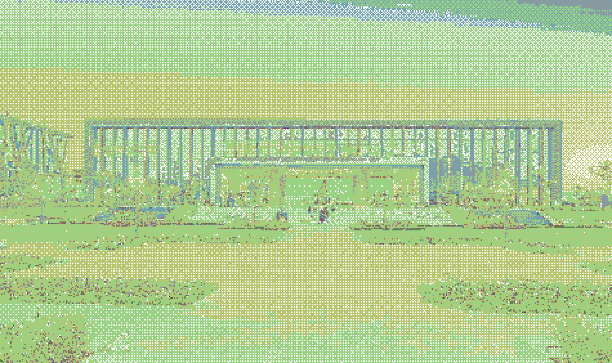

Talk to someone
who's already there.
Verified alumni and current students from India's design schools: all 19 NIFT campuses, the NIDs and the IITs that teach design. Find someone from your branch and ask them about entrances, portfolios, campus life or work.
Launching soonHow it works